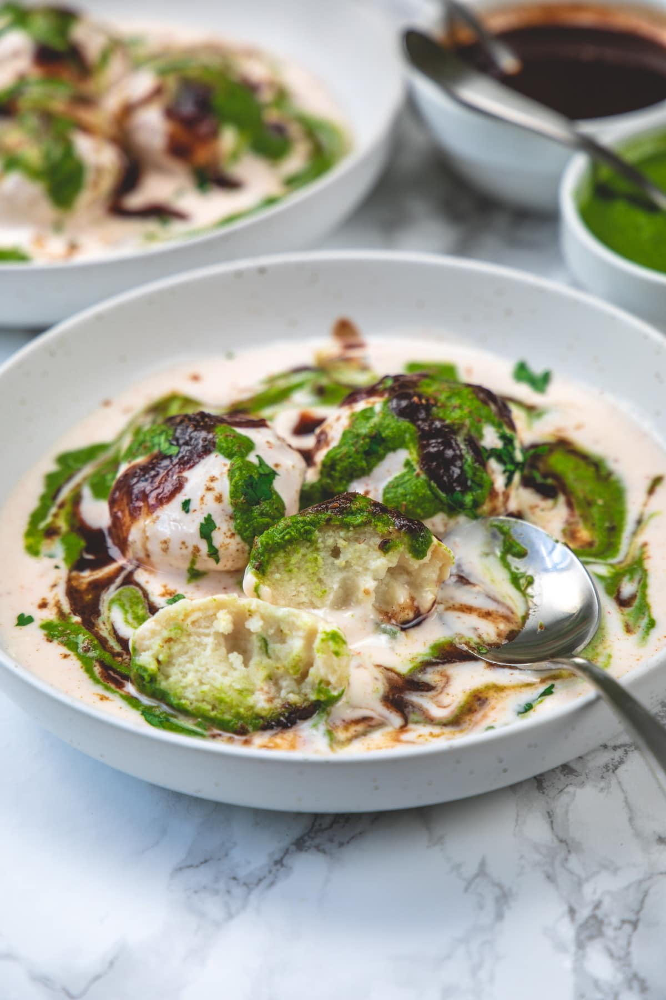

Make or buy two chutneys: (1) Cilantro chutney (2) Tamarind date chutney.
Preparations (At least a day before):
If making homemade yogurt then you have to plan ahead of time. Setting the yogurt takes
around 8 or more hours, plus chilling time in the refrigerator. Take chilled yogurt in a
bowl. Add salt, red chili powder and roasted cumin powder.
Whisk everything together until yogurt becomes smooth and runny. If your yogurt is too
thick then you may need to add some water to make pourable consistency.
Making Dahi Vada Batter:
Wash the urad dal under running cold water until water runs clear. Or rinse them in a
bowl 2-3 times until the water is not cloudy anymore.
Soak the dal in enough water for 4-5 hours. Lentils will get bigger in size. Drain the water completely.
Add the dal in the blender along with fresh water. Start with less amount of water and add more
gradually as needed. Make a smooth yet thick paste-like batter.
Remove the batter to a large bowl. Use the silicone spatula to take out all the batter from the blender. Add salt, hing and chopped chilies.
Mix and beat the batter vigorously for around 5 minutes or until it becomes light and fluffy. This step is important to make soft and fluffy vadas.
You can notice the texture difference of batter before (pic-4) and after beating (pic-6).
Check the consistency Take water in a bowl or cup. Add a small portion of the batter into the water.
It should float on the surface (meaning it is aerated well and it is light and fluffy). If it sinks to the bottom then you may need to beat it for some more time to make it light.
Traditional Deep-Frying Method
Heat the oil in a pan or kadai for deep frying on medium heat. Once hot drop around 2 tablespoons of batter carefully into the oil using hand or by using two spoons.
Fry them until they are light golden brown from all sides. Remove them to a paper-towel lined plate.
Immediately add the warm vada into the water and soak for 30-40 minutes.
Similarly, they will get bigger in the size. Squeeze out the water by gently pressing.
Assemble Dahi Vada Plate
Place water-squeezed vada into the plate.
Add yogurt (all the vada should be covered with yogurt plus a ladleful or two extra).
Drizzle the cilantro chutney on top.
Drizzle tamarind date chutney.
Garnish & Serve:
Sprinkle chili powder and roasted cumin powder.
Also, add some chopped cilantro.
Serve your dish!!

Storage Instructions
The batter can be stored in the refrigerator for a day.
Soaked/squeezed dahi vada stays good for 1-2 days only in the refrigerator.
Assembled dahi vada stays good for 2 days.
Fried vada (not soaked) can be stored for 4-5 days. On the day of serving, remove the vada from the fridge and bring it to room temperature. Then soak in the lukewarm water for 30-40 minutes. Make sure the water is warm (not room temperature) for soaking.